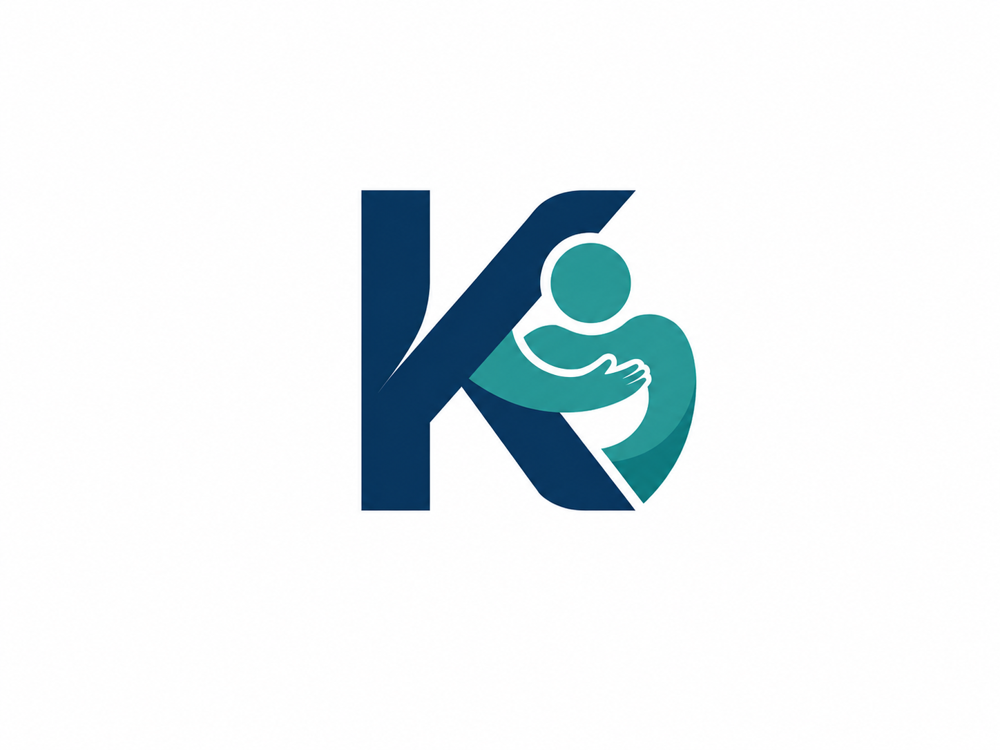
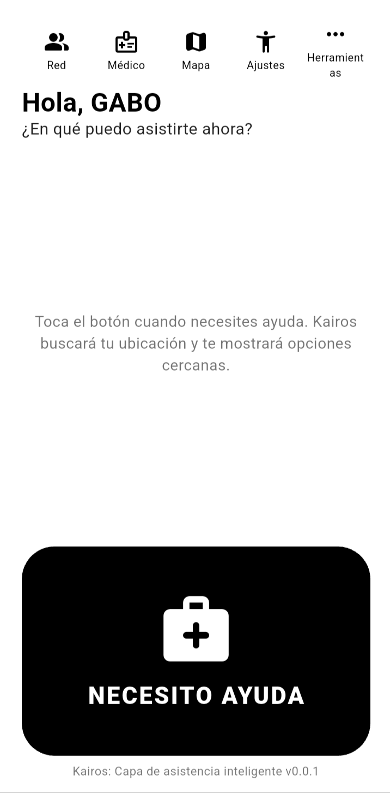
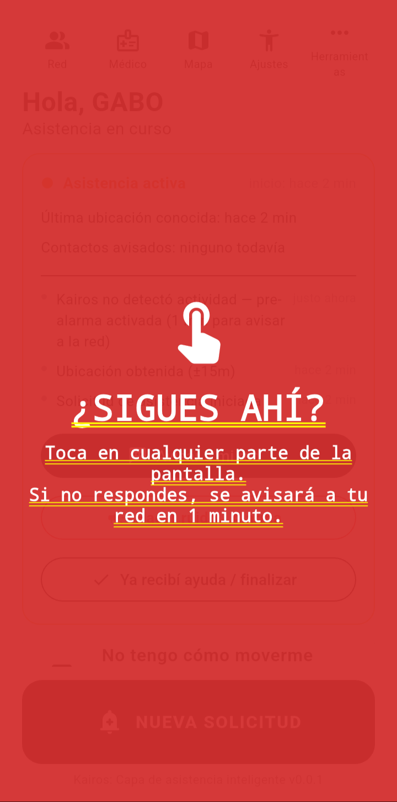
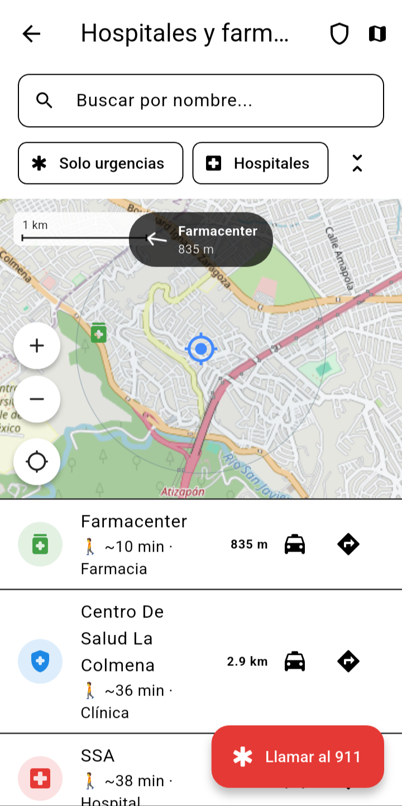
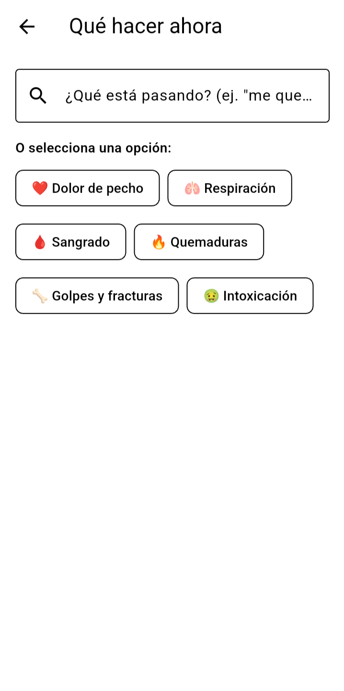
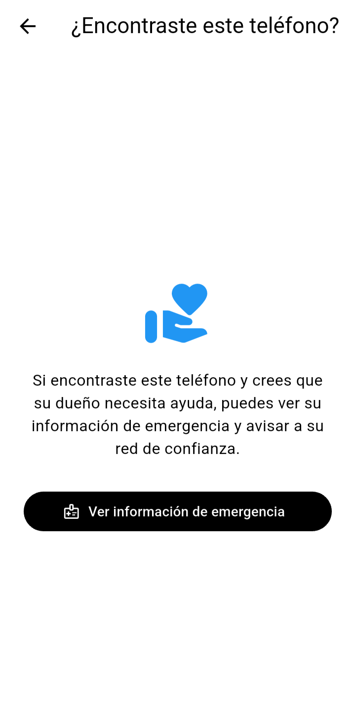

Proyecto en producción · Flutter
ASISTENCIA EN EMERGENCIAS PERSONALES — SIN BACKEND, SIN CUENTAS
Una app pensada para el peor momento de alguien: GPS, red de contactos de confianza, recursos de salud cercanos y un Dead Man's Switch que avisa solo si la persona deja de responder. No es un tracker permanente. No es una red social. Todo vive en el teléfono.
"Hay aplicaciones diseñadas para los días normales. Kairos fue diseñado para los días que nadie quiere vivir."
En pantalla
Cinco pantallas del núcleo de la app — desde pedir ayuda hasta lo que ve quien encuentra el teléfono de alguien más.





Filosofía de diseño
Cinco reglas se repiten, casi palabra por palabra, en el propio código. No son buenas intenciones sueltas: cada una está documentada en el archivo donde aplica, como decisión explícita, no como omisión.
Las emergencias no esperan una conexión estable. Los recursos esenciales viven en el dispositivo: mapas, información crítica y primeros auxilios. Si el mundo se desconecta, Kairos sigue funcionando.
La información médica, la red de confianza, la ubicación y los registros permanecen almacenados localmente. Kairos solo usa internet cuando el usuario decide descargar recursos o actualizar.
En una emergencia, la falsa certeza puede ser peligrosa. Kairos nunca afirma conocer una ubicación que no pudo obtener, ni dice que un mensaje fue recibido cuando solo pudo enviarlo.
Las manos tiemblan. La visión se vuelve borrosa. El tiempo se vuelve crítico. Por eso hay texto ampliado, alto contraste, lectura por voz y controles simples, pensados para momentos de estrés.
Si el usuario activa el Dead Man's Switch y deja de responder, Kairos abre el SMS con ubicación e información médica hacia su red de confianza — pero nunca afirma que el mensaje fue recibido, solo que se abrió el envío.
"Si algún día Kairos deja de respetar cualquiera de estos principios, dejará de ser Kairos." — es el contrato moral que la propia app se impone a sí misma.
El flujo que importa
Este es el único camino de toda la app donde una cadena de eventos corre sin que el usuario vuelva a tocar nada. Todo lo demás — avisar a la red manualmente, resolver la sesión, pedir un viaje — es siempre una acción explícita.
1. El usuario toca "NECESITO AYUDA". Arranca la sesión de asistencia, empieza a monitorear la batería y pide la ubicación GPS.
2. El Dead Man's Switch empieza a contar. Cada toque en la pantalla reinicia el conteo. Es el único mecanismo de toda la app que actúa sin que nadie decida nada en el momento.
3. Si el tiempo se agota sin actividad, Kairos avisa por voz, abre un SMS de borrador para la red de confianza y activa la alarma física — sirena, flash y vibración.
El SMS nunca se envía solo — es una restricción del propio sistema operativo. Por eso la alarma física es el respaldo real si nadie puede tocar "Enviar".
Qué hace, nivel por nivel
Kairos no se piensa por infraestructura — se piensa por lo que alguien puede efectivamente hacer con la app, antes, durante y después de una emergencia.
Producción
Producción
Producción
Producción
Qué se sostiene solo
Analizando los imports reales entre los 29 servicios: 14 de ellos no dependen de ningún otro — son las piezas más seguras para tocar primero. Otros cuatro, en cambio, son el corazón: si uno de estos falla, se cae la posibilidad misma de que alguien se entere de la emergencia.
Nota de honestidad: la ubicación GPS no aparece como dependencia de ningún otro servicio en el conteo puro de imports — pero sin ella, la pantalla principal no tiene qué mostrar. La tabla combina el dato objetivo con criterio de dominio, no una métrica perfecta.
Privacidad por diseño
Todo vive en el dispositivo. No hay servidor propio ni cuenta de usuario que crear.
El cifrado se usa solo donde de verdad se justifica: perfil médico y palabra de seguridad van en almacenamiento cifrado del sistema (Keystore/Keychain). El resto de la app, a propósito, no paga ese costo en cada lectura.
Kairos nunca pide permiso de acceso a los contactos del teléfono. La red de confianza se carga siempre a mano — es una decisión de diseño, no una limitación técnica.
No auto-envía el SMS de alerta — siempre queda como borrador para que una persona decida. No enciende la alarma física al pedir ayuda. No genera contenido médico en tiempo real: todo el material offline se revisa fuera de la app antes de entrar. No convierte la bitácora del cuidador en un expediente permanente — se borra sola a las 72 horas.
Stack técnico
GPS y mapa offline-first con tiles .pmtiles propios — sin depender de Google Maps.
Keystore/Keychain del sistema — reservado solo para perfil médico y palabra de seguridad.
Mantiene vivo el proceso en Android durante el conteo del Dead Man's Switch, con la pantalla apagada.
Conectividad real en dos capas: detección de radio y verificación efectiva, no solo "hay wifi".
Los tres componentes físicos de la alarma de supervivencia: vibración, flash estroboscópico y sirena.
Narración por voz, siempre detrás de la preferencia explícita del usuario.
Lo que ya se rompió una vez
Una auditoría completa del proyecto encontró y corrigió fallas reales — algunas de ellas del tipo que solo aparece cuando una app tiene que funcionar en el peor momento posible, no en una demo.
El compromiso
Una buena arquitectura no solo se define por lo que puede hacer — también por lo que decide no hacer. Privacidad antes que recolección de datos. Resiliencia antes que dependencia. Honestidad antes que apariencia. Utilidad antes que complejidad.
Sin publicidad invasiva. Sin venta de datos personales. Sin funciones esenciales bloqueadas detrás de un muro de pago. Sin mecanismos diseñados para mantenerte más tiempo dentro de la app del que necesitas estar.
Una carta del desarrollador
No comencé este proyecto buscando crear la aplicación más grande ni la más popular. Lo comencé porque creo que la tecnología puede hacer algo más que entretener: puede acompañar, puede orientar, puede reducir la incertidumbre y, en el momento adecuado, puede acercar ayuda cuando más se necesita.
No puedo estar junto a cada persona cuando atraviese una emergencia. Pero sí puedo intentar construir una herramienta que permanezca a su lado cuando yo no pueda hacerlo.
Si algún día Kairos consigue ayudar a una sola persona a encontrar el camino correcto, pedir ayuda a tiempo o tomar una mejor decisión durante un momento difícil, todo este esfuerzo habrá valido la pena.
Por qué existe
Software que sigue siendo útil cuando las condiciones reales no son perfectas.